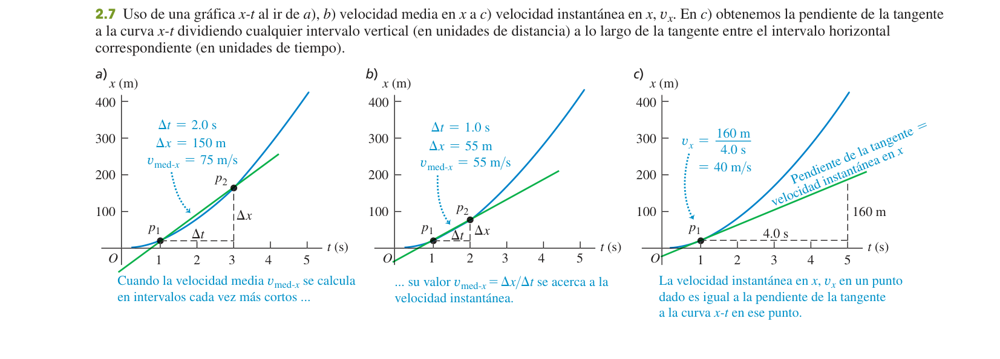

Movimiento rectilíneo
El movimiento en una sola dimensión: cómo describir con precisión dónde está algo, qué tan rápido se mueve y cómo cambia esa rapidez — la base de toda la cinemática que viene después.
0Antes de empezar U p.34
Prerrequisitos: álgebra básica (despejar, resolver una ecuación de segundo grado), nociones de derivada e integral (pendiente de una curva, área bajo una curva) — no hace falta dominarlas, se explican aquí con lo mínimo necesario — y del tema 1: trabajar con signos y unidades con cuidado.
Mapa del tema: primero un solo eje (el eje $x$), sin vectores todavía: la posición es un número con signo. Definimos velocidad media e instantánea (secciones 2.1-2.2), luego aceleración media e instantánea (2.3) — el mismo patrón "media = cuerda, instantánea = tangente" se repite dos veces. La sección 2.4 da las cuatro ecuaciones "de toda la vida" para aceleración constante, que es con diferencia el caso que más cae en examen (persecuciones, frenados, caída libre). La sección 2.5 aplica esas mismas ecuaciones a la caída libre. La sección 2.6 rompe la suposición de aceleración constante: cuando $a$ depende del tiempo hay que integrar — y es justo el tipo de problema (cohete con $g$ variable) que ha caído en examen real.
De los 16 exámenes revisados, 4 preguntas pertenecen a este tema: dos problemas de frenado con deceleración constante (satélite, bala), un problema de cohete con aceleración variable por tramos (hay que integrar) y una pregunta de teoría sobre velocidad instantánea. No es de los temas más preguntados del bloque (los temas 8 y 10 salen bastantes más veces), pero sus técnicas — sobre todo elegir la ecuación correcta de aceleración constante — son la base de casi todos los problemas de Mecánica que vienen después.
1Desplazamiento, tiempo y velocidad media
Imagina un coche que se mueve solo por una carretera recta (un eje $x$). Su posición $x$ es un número con signo: positivo a un lado del origen, negativo al otro. Si en un viaje avanza y luego retrocede, lo que importa para el desplazamiento es solo dónde empezó y dónde acabó, no el camino recorrido — como la diferencia entre "cuánto te has alejado de casa" y "cuántos pasos has dado en total".
El desplazamiento en el intervalo de $t_1$ a $t_2$ es el cambio de posición:
$$\Delta x = x_2-x_1 \qquad\text{(ec. 2.1)}$$La velocidad media es ese desplazamiento dividido entre el tiempo transcurrido:
$$v_{\text{med-}x} = \frac{x_2-x_1}{t_2-t_1} = \frac{\Delta x}{\Delta t} \qquad\text{(ec. 2.2)}$$Tiene signo: positivo si $x$ aumenta (movimiento hacia $+x$), negativo si disminuye. No hay que confundirla con la rapidez media, que es la distancia total recorrida (siempre positiva, sin importar la dirección) dividida entre el tiempo — no es lo mismo que $|v_{\text{med-}x}|$ salvo que el movimiento sea todo en la misma dirección.
U p.35Confundir velocidad media con rapidez media. Si caminas 60 m al este y luego 40 m de vuelta al oeste, tu desplazamiento neto es de solo 20 m (velocidad media pequeña), pero recorriste 100 m en total (rapidez media mucho mayor). Es justo el Problema 2.5 resuelto más abajo, en «Ejercicios resueltos».
U p.382Velocidad instantánea
La velocidad media te dice cómo de rápido fue todo el trayecto de tu casa al trabajo, pero no cuán rápido ibas en un instante concreto — para eso está el velocímetro del coche, que marca la velocidad "ahora mismo". Matemáticamente, esa velocidad "ahora mismo" es el límite de la velocidad media cuando el intervalo de tiempo se hace tan pequeño que prácticamente es un instante.
La velocidad instantánea en un instante es el límite de la velocidad media cuando $\Delta t\to0$, es decir, la derivada de la posición respecto al tiempo:
$$v_x = \lim_{\Delta t\to0}\frac{\Delta x}{\Delta t} = \frac{dx}{dt} \qquad\text{(ec. 2.3)}$$Es un número con signo (positivo = se mueve hacia $+x$, negativo = hacia $-x$); su valor absoluto $|v_x|$ es la rapidez instantánea, siempre $\ge0$.
U p.37En una gráfica $x$ contra $t$: la velocidad media entre dos instantes es la pendiente de la cuerda (recta secante) que une los dos puntos $(t_1,x_1)$ y $(t_2,x_2)$. La velocidad instantánea en un instante es la pendiente de la recta tangente a la curva en ese punto — el límite de la cuerda cuando los dos puntos se acercan hasta casi coincidir. Si la tangente sube hacia la derecha, $v_x>0$; si baja, $v_x<0$; si es horizontal, $v_x=0$.
U p.39
Un guepardo tiene posición $x=20\ \text{m}+(5.0\ \text{m/s}^2)t^2$. Halla su velocidad en $t=1.0$ s.
- Derivamos: $v_x = dx/dt = (10\ \text{m/s}^2)\,t$.
- En $t=1.0$ s: $v_x = 10\times1.0 = 10\ \text{m/s}$.
- Interpretación: en ese instante la posición crece a razón de 10 m por cada segundo — es la pendiente de la tangente a la parábola $x(t)$ en $t=1.0$ s, no la pendiente de ninguna cuerda.
3Aceleración media e instantánea
Igual que la velocidad mide cómo cambia la posición, la aceleración mide cómo cambia la velocidad. Es el mismo patrón otra vez: aceleración media = "cuerda" en una gráfica $v_x$-$t$; aceleración instantánea = "tangente" en esa misma gráfica.
La aceleración instantánea es la derivada de la velocidad respecto al tiempo — y, por tanto, la segunda derivada de la posición.
U p.40Lo que decide si un objeto va "cada vez más rápido" o "frenando" no es el signo de $a_x$ por sí solo, sino la relación entre los signos de $v_x$ y $a_x$:
- Si $v_x$ y $a_x$ tienen el mismo signo (los dos $+$ o los dos $-$): la rapidez aumenta (acelera, en el sentido cotidiano).
- Si $v_x$ y $a_x$ tienen signos opuestos: la rapidez disminuye (frena) — aunque $a_x$ sea positiva, si $v_x$ es negativa el objeto está frenando.
En el punto más alto de un tiro vertical hacia arriba, la velocidad es $v_y=0$ durante un instante — pero la aceleración sigue siendo $a_y=-g\ne0$ en todo momento (la gravedad no deja de actuar). "Está parado" no significa "no está acelerando": significa que, justo en ese instante, está cambiando de sentido.
U p.524Movimiento con aceleración constante
Cuando la aceleración no cambia con el tiempo (el caso más común en los problemas de examen: caída libre, frenados, arranques), la velocidad crece (o decrece) de forma uniforme y la posición sigue una parábola en el tiempo. De ahí salen cuatro ecuaciones que relacionan las mismas cinco magnitudes de formas distintas — y la clave para resolver rápido es elegir la que no involucra el dato que no tienes ni el que no te piden.
Con $x_0,v_{0x}$ la posición y velocidad en $t=0$, y $a_x$ constante, las cinco magnitudes en juego son $x-x_0,\ t,\ v_{0x},\ v_x,\ a_x$. Cada ecuación relaciona cuatro de ellas y omite una:
| Ecuación | Fórmula | No aparece |
|---|---|---|
| 2.8 | $v_x = v_{0x}+a_xt$ | $x-x_0$ |
| 2.12 | $x = x_0+v_{0x}t+\tfrac12a_xt^2$ | $v_x$ |
| 2.13 | $v_x^2 = v_{0x}^2+2a_x(x-x_0)$ | $t$ |
| 2.14 | $x-x_0 = \tfrac12(v_{0x}+v_x)t$ | $a_x$ |
La Tabla 2.4 de U organiza justo esto: mira qué dato te falta y qué te piden, y elige la ecuación que no incluye la magnitud que ni tienes ni te interesa. Aparte, y solo válida si $a_x$ es constante, conviene recordar la ec. 2.10: $v_{\text{med-}x}=\tfrac12(v_{0x}+v_x)$ — la velocidad media es el promedio simple de la inicial y la final, útil para comprobar resultados.
U p.45Con $a_x$ constante, la gráfica $x$-$t$ es una parábola (por la ec. 2.12) y la gráfica $v_x$-$t$ es una recta de pendiente $a_x$ (por la ec. 2.8). En la gráfica $v_x$-$t$, el área bajo la recta entre dos instantes es exactamente el desplazamiento $x-x_0$ en ese intervalo — es la misma idea de "área bajo la curva" que se generaliza en la sección 2.6 para cuando $a_x$ ya no es constante. U p.45
Un coche que rebasa el límite de velocidad pasa a $v=15\ \text{m/s}$ constantes frente a un policía de tráfico parado en su motocicleta. Justo en ese instante ($t=0$, mismo punto de partida) el policía arranca la moto con aceleración constante $a=3.0\ \text{m/s}^2$ para darle alcance. ¿Cuánto tarda en alcanzarlo, a qué distancia y a qué velocidad va la moto en ese momento?
- Mismo origen y mismo reloj para los dos: coche, $x_c(t)=15t$ (ec. 2.12 con $a=0$); moto, $x_m(t)=\tfrac12(3.0)t^2$ (ec. 2.12 con $v_0=0$).
- Se encuentran cuando $x_c=x_m$: $15t=1.5t^2 \Rightarrow t(1.5t-15)=0$. Descartando $t=0$: $t=10\ \text{s}$.
- Distancia: $x=15\times10=150\ \text{m}$. Velocidad de la moto en ese instante (ec. 2.8): $v_m=3.0\times10=30\ \text{m/s}$ — el doble que el coche.
Antes de tocar ninguna fórmula, escribe en una lista las cinco magnitudes $x-x_0,\ t,\ v_{0x},\ v_x,\ a_x$ y marca cuáles conoces, cuál te piden y cuál no interviene. Eso te dice directamente qué ecuación usar sin tanteos.
5Cuerpos en caída libre
La caída libre es el caso particular de aceleración constante en el que la única fuerza es la gravedad (se desprecia la resistencia del aire). Cerca de la superficie terrestre, la aceleración de caída libre tiene magnitud $g=9.80\ \text{m/s}^2$ y apunta siempre hacia abajo. Si eliges el eje $+y$ hacia arriba, entonces $a_y=-g=-9.80\ \text{m/s}^2$ — con ese signo se usan directamente las cinco ecuaciones de la sección anterior, cambiando $x$ por $y$.
U p.50El signo de $g$ en las ecuaciones depende de cómo hayas orientado tú el eje, no es un signo universal. Si $+y$ apunta hacia arriba, $a_y=-9.80\ \text{m/s}^2$ (siempre negativa, tanto subiendo como bajando). Si en cambio eliges $+y$ hacia abajo, entonces $a_y=+9.80\ \text{m/s}^2$. Fija el criterio de signos antes de sustituir números y no lo cambies a mitad de problema. Y recuerda de la sección 2.3: en el punto más alto del tiro, $v_y=0$ pero $a_y=-g$ sigue actuando — no "se apaga" la gravedad porque el objeto esté momentáneamente parado.
U p.51Se lanza una pelota hacia arriba desde una azotea con $v_{0y}=15.0$ m/s. ¿En qué instante está a 5.00 m por encima del punto de lanzamiento?
- Con la ec. 2.12 ($a_y=-g$): $5.00=15.0t-\tfrac12(9.80)t^2$, una ecuación de segundo grado en $t$.
- Resolviendo, salen dos raíces positivas: $t_1=0.38$ s y $t_2=2.68$ s.
- Las dos son físicamente válidas: la pelota pasa por esa altura dos veces — una subiendo ($t_1$, más pronto y con $v_y>0$) y otra bajando ($t_2$, más tarde y con $v_y<0$).
Contraste con el ejercicio 2.38 de más abajo: allí el techo detiene la masilla en la primera vez que llega a esa altura, así que solo la raíz "subiendo" tiene sentido físico. La lección es que una ecuación de segundo grado puede dar dos soluciones matemáticamente correctas, y hay que decidir con física (no con matemáticas) cuál o cuáles corresponden al problema real.
U p.526Velocidad y posición por integración
Las cuatro ecuaciones de la sección 2.4 solo valen si $a_x$ es constante. Si la aceleración cambia con el tiempo (por ejemplo, un cohete cuyo empuje o cuya gravedad efectiva varían), esas ecuaciones dejan de ser válidas y hay que volver a la definición: la velocidad es el área acumulada bajo la curva $a_x$-$t$, y la posición es el área acumulada bajo la curva $v_x$-$t$.
Geométricamente: el desplazamiento entre dos instantes es el área bajo la curva $v_x$ frente a $t$ en ese intervalo (con signo: el área "por debajo del eje" cuenta como negativa). Cuando $a_x$ no es constante, hay que integrar dos veces (primero $a_x\to v_x$, luego $v_x\to x$) y, si la aceleración cambia de expresión en distintos tramos de tiempo, integrar tramo a tramo usando el valor final de un tramo como condición inicial del siguiente.
U p.53U ilustra esto con un coche cuya aceleración decrece con el tiempo, $a_x(t)=2.00\ \text{m/s}^2-(0.100\ \text{m/s}^3)t$: integrando una vez se obtiene $v_x(t)$ y se puede hallar en qué instante la velocidad es máxima ($a_x=0$); integrando otra vez, $x(t)$. Es el mismo procedimiento, tramo único, que se aplica dos veces seguidas (con continuidad entre tramos) en el problema del cohete más abajo. U p.55
Si el enunciado da $a$ (o $g$, o una fuerza) como función de $t$ en vez de un número fijo, es la señal de que hay que integrar (sección 2.6), no usar las cuatro ecuaciones de la sección 2.4. Es exactamente el caso del ejercicio del cohete más abajo, en «Ejercicios resueltos».
7Ejercicios resueltos
Empezamos por los cuatro ejercicios de examen real (X1-X4) del tema, y seguimos con seis del solucionario oficial (E1-E6), de más sencillo a más elaborado.
X1 — Teoría: Velocidad instantánea X
Desarrolla el tema "Velocidad instantánea" y responde: (a) ¿Puede un cuerpo tener velocidad media nula en un intervalo pero aceleración media no nula? ¿Y velocidad instantánea nula pero aceleración instantánea no nula? (b) ¿En qué condiciones la velocidad media en un intervalo coincide con alguna velocidad instantánea dentro de ese intervalo?
- Motivación. La velocidad media (ec. 2.2) resume todo un intervalo de tiempo en un solo número, pero no dice nada sobre lo que pasó "en un instante" dentro de ese intervalo: un coche puede tener velocidad media 0 en una hora si sale y vuelve al mismo sitio, aunque haya ido a 120 km/h por el camino.
- Definición. La velocidad instantánea se define como el límite de la velocidad media cuando el intervalo de tiempo tiende a cero: $v_x=\lim_{\Delta t\to0}\Delta x/\Delta t = dx/dt$ (ec. 2.3). Es la derivada de la posición respecto al tiempo.
- Signo y rapidez. $v_x$ es un número con signo: positivo si el movimiento es hacia $+x$, negativo hacia $-x$. Su valor absoluto $|v_x|$ es la rapidez instantánea (lo que marca un velocímetro), siempre $\ge0$.
- Interpretación gráfica. En una gráfica $x$-$t$, la velocidad media entre $t_1$ y $t_2$ es la pendiente de la cuerda que une esos dos puntos; la velocidad instantánea en un instante $t_1$ es la pendiente de la recta tangente a la curva en ese punto — el límite de la cuerda cuando el segundo punto se acerca al primero.
- Ejemplo. Con $x=20\ \text{m}+(5.0\ \text{m/s}^2)t^2$ (movimiento tipo guepardo), $v_x=dx/dt=(10\ \text{m/s}^2)t$; en $t=1.0$ s, $v_x=10$ m/s: la pendiente de la tangente en ese instante, no la de ninguna cuerda.
- Relación con la aceleración y con la integral. Derivando otra vez se obtiene la aceleración instantánea, $a_x=dv_x/dt$ (ec. 2.5); en sentido inverso, integrando $a_x(t)$ se recupera $v_x(t)$ (ec. 2.17), y integrando $v_x(t)$ se recupera $x(t)$ (ec. 2.18) — la velocidad instantánea es el eslabón entre posición y aceleración.
- (a) Velocidad media nula con aceleración media no nula. Sí: en un tiro vertical que sube y vuelve exactamente al punto de partida en un tiempo $T$, el desplazamiento es $\Delta y=0$ (velocidad media nula), pero la velocidad cambia de $v_0$ a $-v_0$, así que $a_{\text{med}}=\Delta v_y/T=-2v_0/T\ne0$.
- ¿Y velocidad instantánea nula con aceleración instantánea no nula? También sí: en el punto más alto de ese mismo tiro, $v_y=0$ durante un instante, pero $a_y=-g\ne0$ sigue actuando en todo momento (la gravedad no "se apaga" porque el objeto esté momentáneamente parado).
- (b) ¿Cuándo coinciden v media e instantánea? Si la velocidad es constante en todo el intervalo, coinciden trivialmente en cualquier instante. En general (por el teorema del valor medio del cálculo) existe siempre al menos un instante dentro del intervalo donde la velocidad instantánea iguala a la media. Si además la aceleración es constante, ese instante es exactamente el punto medio del intervalo (consecuencia directa de $v_{\text{med-}x}=\tfrac12(v_{0x}+v_x)$, ec. 2.10, junto con $v_x=v_{0x}+a_xt$).
X2 — Satélite que se estrella X
Un satélite artificial se estrella contra la Tierra. Su masa es de 210 kg y la velocidad de impacto contra la superficie es de 311 km/h. Los restos del satélite penetraron hasta una profundidad de 81 cm. Suponiendo que era constante: a) ¿Cuál fue su aceleración durante el choque? b) ¿Qué fuerza ejerció el suelo sobre el satélite durante el choque? c) ¿Durante cuánto tiempo se ejerció la mencionada fuerza? (Considere $g=9.81$ m/s².)
- Convertimos a SI: $v_0=311/3.6=86.39\ \text{m/s}$, $d=0.81$ m. Tomo $+y$ hacia abajo (sentido de la caída), y supongo impacto vertical (el dato de $g$ y "profundidad" lo sugieren).
- a) Como no conocemos el tiempo, usamos la ecuación 2.13 con $v=0$ al final: $0=v_0^2+2a\,d \Rightarrow |a|=\dfrac{v_0^2}{2d}=\dfrac{86.39^2}{2(0.81)}=4.61\times10^3\ \text{m/s}^2$ (unas 470 veces $g$), dirigida hacia arriba (frenando la caída).
- b) La pregunta es por la fuerza del suelo $N$, no por la fuerza neta. Sobre el satélite actúan su peso $mg$ (hacia abajo, $+y$) y $N$ (hacia arriba, $-y$). 2ª ley: $mg-N=m(-|a|) \Rightarrow N=m(|a|+g)=210\times(4607+9.81)=9.69\times10^5\ \text{N}$, hacia arriba. (La fuerza neta que produce la deceleración es solo $m|a|=9.67\times10^5$ N; $N$ es mayor porque además tiene que contrarrestar el peso.)
- c) Con la ecuación 2.14 (no involucra $a$): $d=\tfrac12(v_0+0)t \Rightarrow t=\dfrac{2d}{v_0}=\dfrac{2(0.81)}{86.39}=1.88\times10^{-2}\ \text{s}$ (≈19 ms).
X3 — Bala que penetra un material X
Para probar una protección antibalas, se dispara una bala de 10 g de masa contra una pieza de un nuevo material que se encuentra en el suelo, de forma que la trayectoria de la bala es perpendicular sobre el material (es decir, vertical hacia abajo). La bala queda incrustada en el material penetrando 2 m de profundidad. Si se disparó a 100 m/s y se supone que la aceleración al incrustarse es constante: a) el valor de la deceleración; b) ¿qué fuerza ejerció el material sobre la bala para frenarla? c) ¿qué tiempo tardó la bala hasta pararse? (Considere $g=9.81$ m/s².)
- Tomo $+x$ en el sentido de avance de la bala (hacia abajo). $v_0=100$ m/s, $v=0$, $d=2$ m, $m=0.010$ kg.
- a) Con la ecuación 2.13 ($v=0$ al final): $|a|=\dfrac{v_0^2}{2d}=\dfrac{100^2}{2(2)}=2500\ \text{m/s}^2$ (unas 255 veces $g$).
- b) La bala cae verticalmente, así que el peso ayuda a frenarla desde el punto de vista de las fuerzas: sobre ella actúan su peso $mg$ (a favor del avance, $+x$) y la fuerza del material $F$ (en contra, $-x$). 2ª ley: $mg-F=m(-|a|) \Rightarrow F=m(g+|a|)=0.010\times(2500+9.81)=25.1\ \text{N}$, hacia arriba (frenando a la bala). Si se despreciara el peso saldría 25.0 N — solo un 0.4% menos, pero como el enunciado da $g$, lo correcto es incluirlo.
- c) Con la ecuación 2.14: $t=\dfrac{2d}{v_0}=\dfrac{2(2)}{100}=0.040\ \text{s}$ (se comprueba también con ec. 2.8: $t=v_0/|a|=100/2500=0.040$ s, coincide).
X4 — Cohete con aceleración variable por tramos X
Un cohete se lanza verticalmente. La aceleración de la gravedad efectiva decrece con el tiempo, $g(t)=g_0-k_3t$ con $g_0=10\ \text{m/s}^2$ y $k_3=0.1\ \text{m/s}^3$. Durante los primeros 10 s el motor ejerce una fuerza $F_1=k_1M$ (con $k_1=20\ \text{m/s}^2$); de $t=10$ s a $t=60$ s, una fuerza menor $F_2=k_2M$ (con $k_2=15\ \text{m/s}^2$). Calcula la altura alcanzada tras 60 s de ascenso.
- Por la 2ª ley de Newton, $F-Mg(t)=Ma(t)$; como $F=kM$, la masa se cancela y queda $a(t)=k-g(t)=k-g_0+k_3t$: la aceleración no es constante, hay que integrar (ec. 2.17-2.18), no usar las ecuaciones de la sección 2.4.
- Tramo 1 (0-10 s): $a_1(t)=k_1-g_0+k_3t = 10+0.1t\ \text{m/s}^2$. Integrando desde $v(0)=0,\ y(0)=0$: $v_1(t)=10t+0.05t^2$; $y_1(t)=5t^2+t^3/60$.
- En $t=10$ s: $v_1(10)=100+5=105\ \text{m/s}$; $y_1(10)=500+1000/60=516.7\ \text{m}$.
- Tramo 2 (10-60 s): $a_2(t)=k_2-g_0+k_3t = 5+0.1t\ \text{m/s}^2$, con condiciones iniciales heredadas del final del tramo 1 por continuidad: $v(10)=105$, $y(10)=516.7$. Integrando: $v_2(t)=105+\int_{10}^t(5+0.1t')dt' = 50+5t+0.05t^2$ (constante ajustada para que $v_2(10)=105$); $y_2(t)=t^3/60+2.5t^2+50t-250$ (constante ajustada para que $y_2(10)=516.7$).
- En $t=60$ s: $v_2(60)=50+300+180=530\ \text{m/s}$; $y_2(60)=216000/60+9000+3000-250=3600+9000+3000-250=15\,350\ \text{m}\approx15.4$ km.
E1 — Problema 2.5: velocidad media vs. rapidez media E
Caminas 60.0 m hacia el este en 28.0 s y luego 40.0 m hacia el oeste en 36.0 s, en línea recta. Calcula a) la velocidad media y b) la rapidez media de todo el recorrido.
- Tomando el este como $+x$: desplazamiento neto $\Delta x = +60.0-40.0 = +20.0$ m; tiempo total $\Delta t = 28.0+36.0=64.0$ s.
- a) $v_{\text{med-}x} = 20.0/64.0 = +0.312\ \text{m/s}$ (hacia el este).
- b) Distancia total recorrida (sin cancelar ida y vuelta) $=60.0+40.0=100\ \text{m}$; rapidez media $=100/64.0=1.56\ \text{m/s}$.
E2 — Problema 2.7: velocidad media e instantánea de x(t) E
Un automóvil está detenido ante un semáforo. Después viaja en línea recta y su distancia al semáforo es $x(t)=bt^2-ct^3$, con $b=2.40\ \text{m/s}^2$ y $c=0.120\ \text{m/s}^3$. a) Calcula la velocidad media entre $t=0$ y $t=10.0$ s. b) Calcula la velocidad instantánea en $t=0$, $t=5.0$ s y $t=10.0$ s. c) ¿Cuánto tiempo después de arrancar vuelve a estar detenido?
- a) $x(0)=0$; $x(10)=2.40(100)-0.120(1000)=240-120=120\ \text{m}$. $v_{\text{med}}=(120-0)/10=12.0\ \text{m/s}$.
- b) Derivando: $v_x(t)=2bt-3ct^2$. $v_x(0)=0$; $v_x(5)=2(2.40)(5)-3(0.120)(25)=24.0-9.0=15.0\ \text{m/s}$; $v_x(10)=2(2.40)(10)-3(0.120)(100)=48.0-36.0=12.0\ \text{m/s}$.
- c) "En reposo" significa $v_x=0$: $2bt-3ct^2=0 \Rightarrow t(2b-3ct)=0$. Descartando $t=0$: $t=\dfrac{2b}{3c}=\dfrac{2(2.40)}{3(0.120)}=13.3\ \text{s}$.
E3 — Problema 2.13: aceleración media entre tramos E
Los datos de prueba de un Bugatti Veyron Super Sport dan su rapidez en cuatro instantes: $t=0$ (arranque, $v=0$), $t=2.1$ s ($v=60$ mph), $t=20.0$ s ($v=200$ mph) y $t=53$ s ($v=253$ mph). Calcula la aceleración media en cada uno de los tres tramos que separan esos cuatro instantes.
- Convertimos todas las velocidades a m/s ($\times0.44704$): $60\to26.82$, $200\to89.41$, $253\to113.10\ \text{m/s}$.
- Tramo 1 (0 a 2.1 s): $a_{\text{med}}=(26.82-0)/2.1=12.8\ \text{m/s}^2$.
- Tramo 2 (2.1 a 20.0 s): $a_{\text{med}}=(89.41-26.82)/(20.0-2.1)=62.59/17.9=3.50\ \text{m/s}^2$.
- Tramo 3 (20.0 a 53 s): $a_{\text{med}}=(113.10-89.41)/(53-20.0)=23.69/33=0.718\ \text{m/s}^2$.
- La aceleración media va decreciendo tramo a tramo: en una gráfica $v_x$-$t$, la curva se va "aplanando" — la aceleración no es constante en todo el ensayo.
E4 — Problema 2.19: hallar v₀ y a sin conocerlas E
Un antílope con aceleración constante recorre 70.0 m en 6.00 s, y su velocidad al final de ese intervalo es 15.0 m/s. Calcula su velocidad inicial y su aceleración.
- Datos conocidos: $x-x_0=70.0$ m, $t=6.00$ s, $v_x=15.0$ m/s; incógnitas: $v_{0x}$ y $a_x$.
- Como no interviene $a_x$, usamos la ecuación 2.14: $x-x_0=\tfrac12(v_{0x}+v_x)t \Rightarrow v_{0x}=\dfrac{2(x-x_0)}{t}-v_x=\dfrac{2(70.0)}{6.00}-15.0=23.33-15.0=8.33\ \text{m/s}$.
- Ahora con la ecuación 2.8: $a_x=\dfrac{v_x-v_{0x}}{t}=\dfrac{15.0-8.33}{6.00}=1.11\ \text{m/s}^2$.
E5 — Problema 2.34: persecución de dos móviles E
En un semáforo, un coche arranca desde el reposo con aceleración constante $a=2.80\ \text{m/s}^2$ justo cuando un camión lo adelanta a velocidad constante $v=20.0\ \text{m/s}$. a) ¿A qué distancia del semáforo el coche alcanza al camión? b) ¿A qué velocidad va el coche en ese instante?
- Mismo origen y mismo reloj para ambos: $x_{\text{coche}}(t)=\tfrac12(2.80)t^2$; $x_{\text{camión}}(t)=20.0t$.
- Se encuentran cuando $x_{\text{coche}}=x_{\text{camión}}$: $1.40t^2=20.0t \Rightarrow t(1.40t-20.0)=0$. Descartando la raíz trivial $t=0$ (el instante de partida, no de encuentro): $t=20.0/1.40=14.29\ \text{s}$.
- a) Distancia: $x=20.0\times14.29=286\ \text{m}$ (comprobación con la fórmula del coche: $\tfrac12(2.80)(14.29)^2=286$ m, coincide).
- b) Velocidad del coche en ese instante: $v=2.80\times14.29=40.0\ \text{m/s}$ — el doble de la del camión.
E6 — Problema 2.38: caída libre hacia un techo E
Se lanza una bola de masilla verticalmente hacia arriba con $v_0=9.50\ \text{m/s}$, hacia un techo situado 3.60 m por encima del punto de lanzamiento. a) Calcula la velocidad de la bola justo al llegar al techo. b) Calcula cuánto tiempo tarda en llegar.
- Tomamos $+y$ hacia arriba, así que $a_y=-g=-9.80\ \text{m/s}^2$. Primero comprobamos que la bola llega: la altura máxima posible es $v_0^2/(2g)=9.50^2/(2\times9.80)=4.60\ \text{m}>3.60\ \text{m}$, así que sí alcanza el techo, todavía subiendo.
- a) Como no tenemos el tiempo, usamos la ecuación 2.13: $v_y^2=v_{0y}^2+2a_y\Delta y = 9.50^2+2(-9.80)(3.60)=90.25-70.56=19.69 \Rightarrow |v_y|=4.44\ \text{m/s}$. Como todavía está subiendo (no ha llegado a la altura máxima), se toma $v_y=+4.44\ \text{m/s}$.
- b) Con la ecuación 2.8: $t=\dfrac{v_y-v_{0y}}{a_y}=\dfrac{4.44-9.50}{-9.80}=0.517\ \text{s}$.
8Chuleta y lista de comprobación
| Concepto | Fórmula |
|---|---|
| Velocidad media | $v_{\text{med-}x}=\Delta x/\Delta t$ — rapidez media $=$ distancia total/tiempo |
| Velocidad instantánea | $v_x=dx/dt$ (pendiente de la tangente en $x$-$t$) |
| Aceleración media/instantánea | $a_{\text{med-}x}=\Delta v_x/\Delta t$; $a_x=dv_x/dt=d^2x/dt^2$ |
| Regla de signos | $v_x$ y $a_x$ mismo signo → acelera; signos opuestos → frena |
| Aceleración constante (ec. 2.8, 2.12-2.14) | $v_x=v_{0x}+a_xt$; $x=x_0+v_{0x}t+\tfrac12a_xt^2$; $v_x^2=v_{0x}^2+2a_x(x-x_0)$; $x-x_0=\tfrac12(v_{0x}+v_x)t$ |
| Caída libre | caso particular con $a_y=-g$ si $+y$ es hacia arriba |
| Aceleración no constante | $v_x(t)=v_{0x}+\int_0^t a_x\,dt'$; $x(t)=x_0+\int_0^t v_x\,dt'$ (ec. 2.17-2.18) |
- Sé distinguir velocidad/rapidez media de velocidad/rapidez instantánea.
- Sé leer pendientes en gráficas $x$-$t$ (cuerda = v media, tangente = v instantánea) y $v$-$t$ (cuerda = a media, área = desplazamiento).
- Sé elegir, con la Tabla 2.4, la ecuación de aceleración constante que evita la magnitud que no tengo ni me piden.
- Sé resolver un problema de caída libre eligiendo el signo correcto de $g$ según el eje.
- Sé plantear y resolver un problema de persecución de dos móviles igualando $x(t)$.
- Sé reconocer cuándo la aceleración no es constante e integrar tramo a tramo con continuidad.